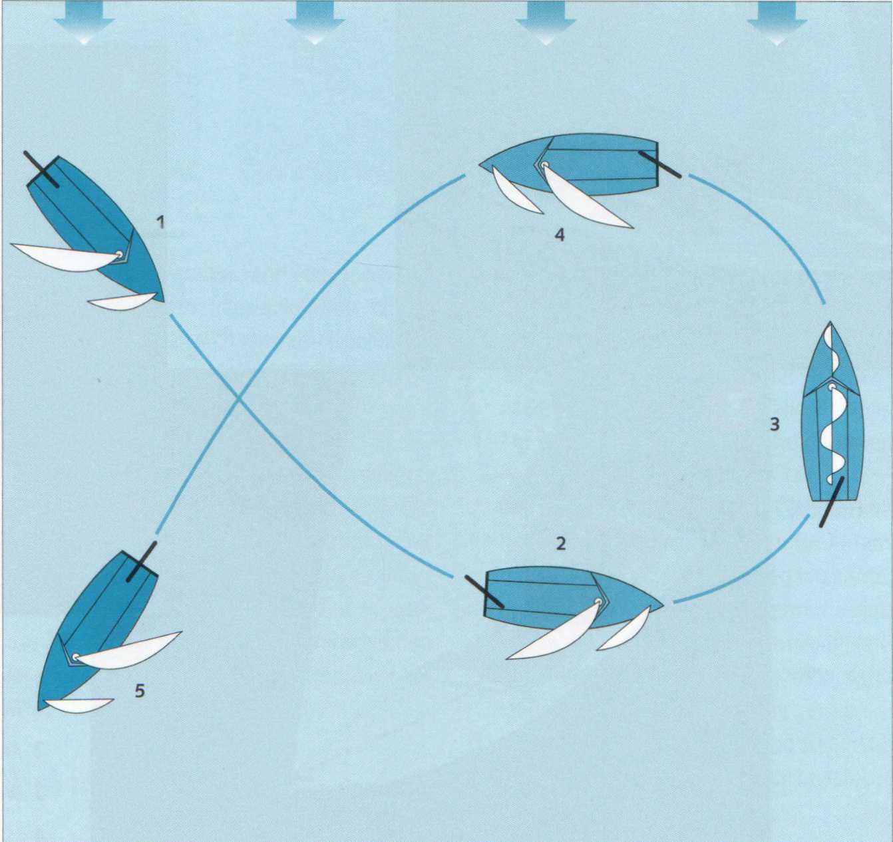
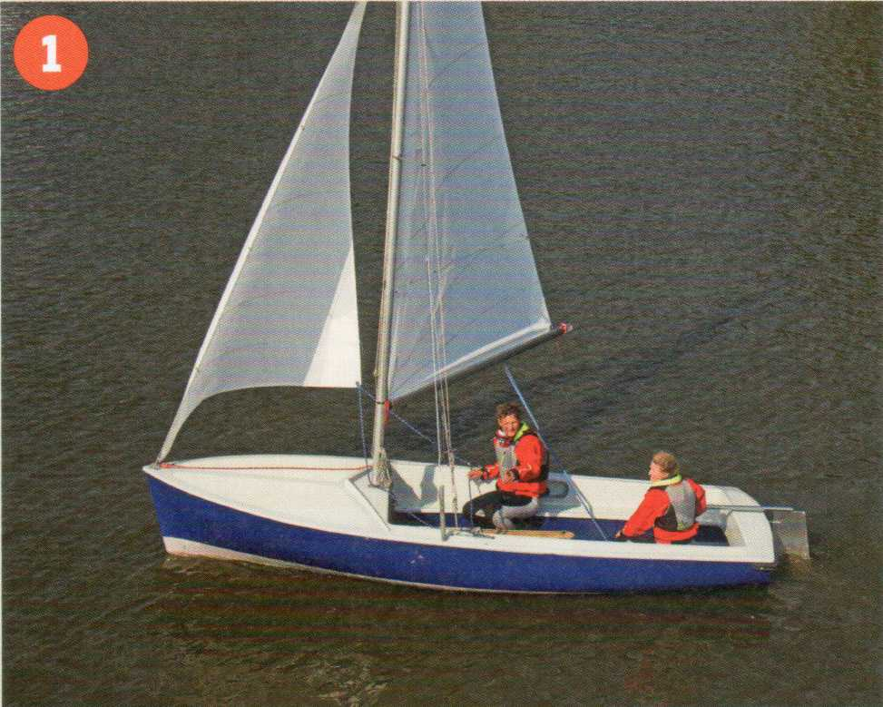
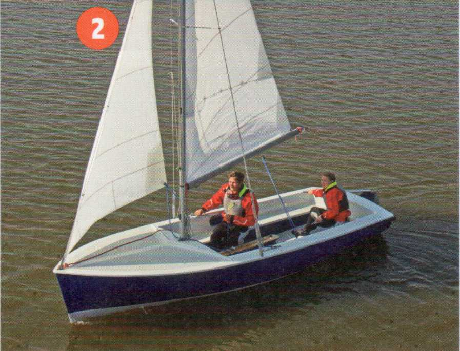
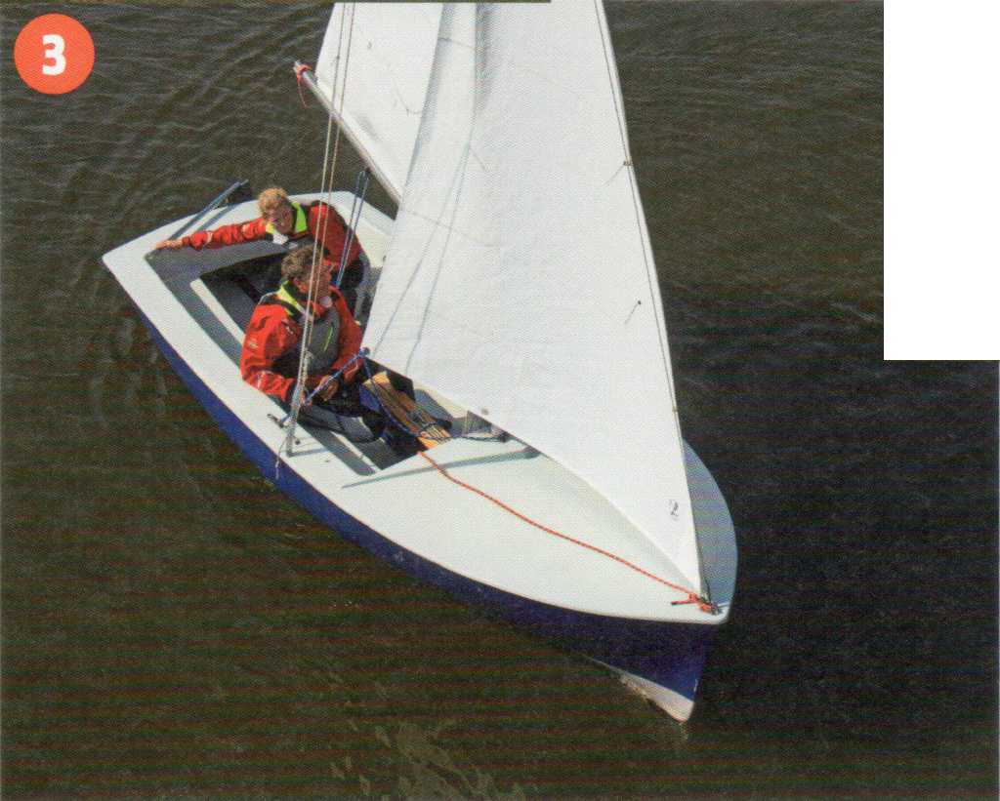
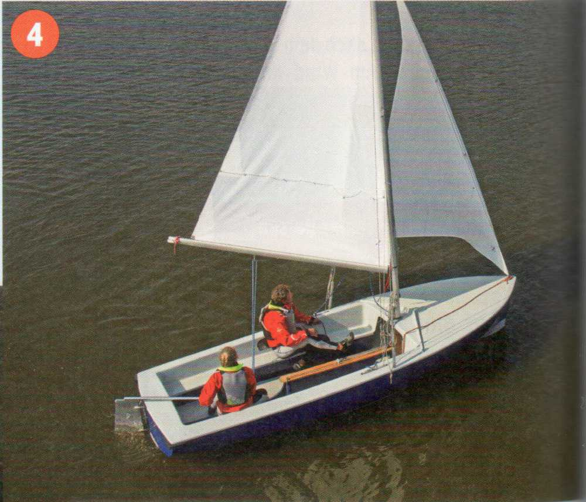
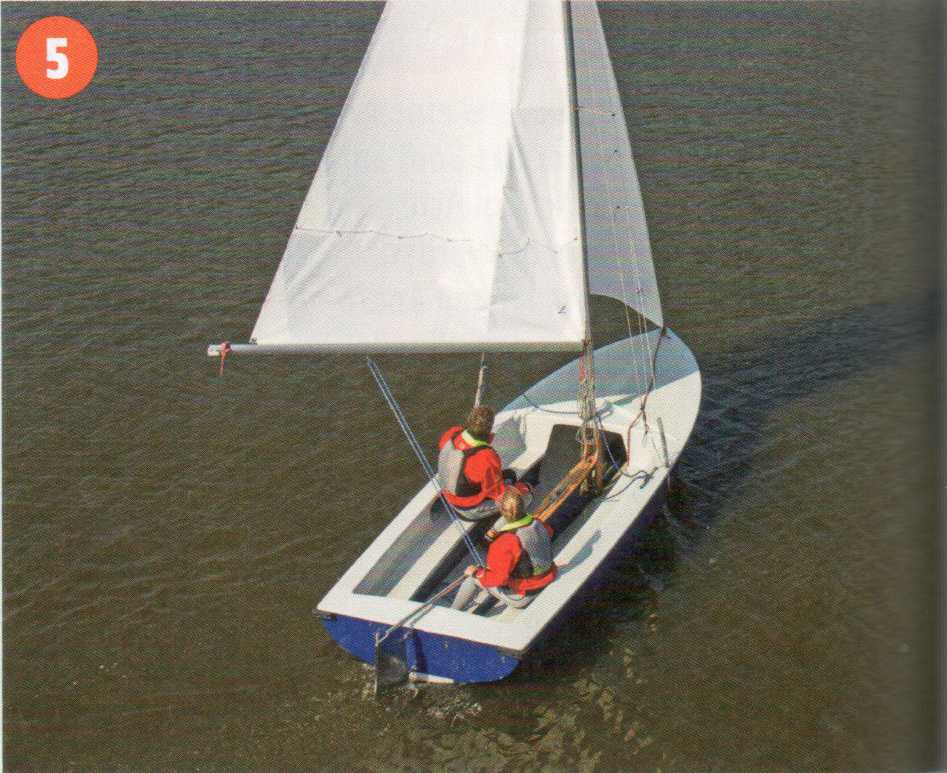

Erscheint bei starkem wind das Halsen zu riskant, kann man sich mit der Q-Wende helfen. Statt mit dem Heck durch den Wind zu gehen, wird vom Raumschots-Kursausange-luvt bis an den Wind, dann regulär gewendet und wieder gleichmäßig abgefallen. So entsteht ein Bogen, bei dem man sein eigenes Kielwasser kreuzt und am Startpunkt des Manövers wieder herauskommt. Deshalb nutzt man die Q-Wende auch als Rettungsmanöver beim Mensch-Über-Bord-Manöver.

|
Kommandotafel Schiften |
|---|
|
Klar zur Q-Wende! Ist klar! Ree! Über die Segel! Fier auf die Schoten ...Wind! |
|
Typische Anfängerfehler Q-Wende |
|
Ansetzen zum Wenden aus einem raumeren Kurs, bevor das Boot am Wind läuft. Wenn nicht gleichzeitig die Schoten dichtgeholt werden, verliert man bei dem langen Andre-hen zu viel Fahrt. Aus dem Wenden wird ein Aufschießer. Zu harte Ruderlage bremst zu stark: Das Boot bleibt im Wind liegen. Das Boot segelt mit zu wenig Fahrt zu hoch am Wind: Es »verhungert« in der Wende. Die Fockschot wird zu früh losgeworfen: Das Vorsegel killt fahrthemmend, statt noch Vortrieb zu liefern beziehungsweise das Drehmoment zu verstärken. Zu weites Abfallen nach dem Wenden mit für einen Am-Wind-Kurs dichtgeholten Schoten. |
|
Typische Anfängerfehler Halsen |
|
Die Großschot wird schon dichtgeholt, obwohl das Boot noch nicht vor dem Wind liegt: Das Segel geht nicht über, starke Drehtendenz nach Luv. Nach »rund achtern« kein Stützruder gegeben: bei stärkerer Brise akute Kentergefahr. Zu hart und lange Stützruder gelegt: Das Boot fällt auf den alten Bug zurück, der Großbaum schlägt zurück. Kentergefahr und gefährlich fürs Rigg. Das Schwert ist vollständig gefiert, dadurch erhöht sich die Kentergefahr erheblich. |

1 Raumer Wind auf Steuerbord-Bug, Vorschoter macht Gewichtsausgleich.

2 Anluven, Schoten mitführen, Fahrt im Schiff behalten.

3 Wenden mit anschließendem Abfallen ...

4 ... auf Raumschots-Kurs.

5 Raumer Wind auf Backbord-Bug.